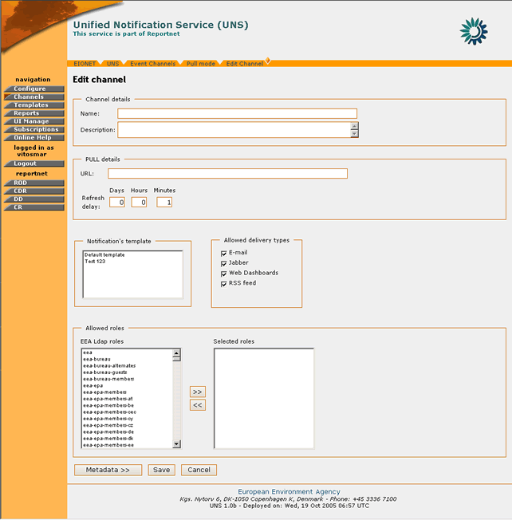
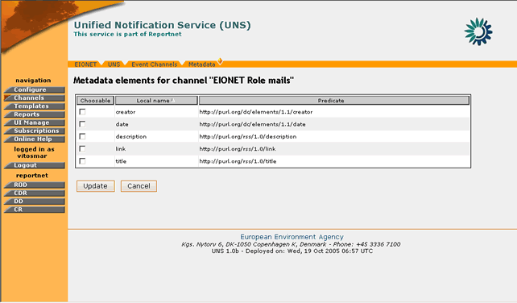
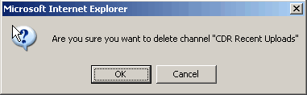
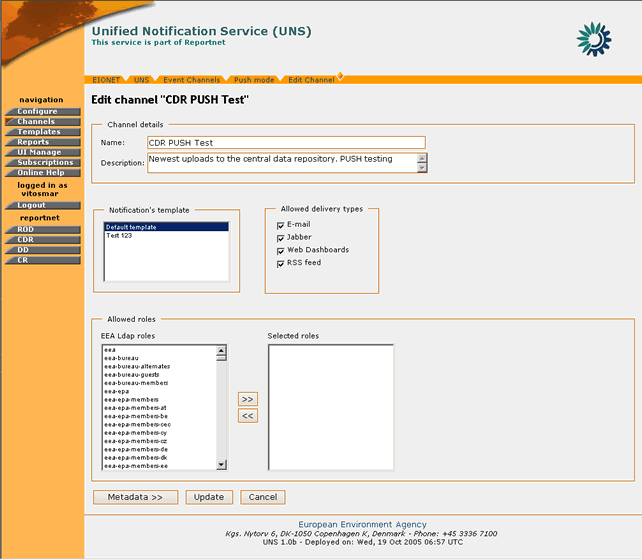
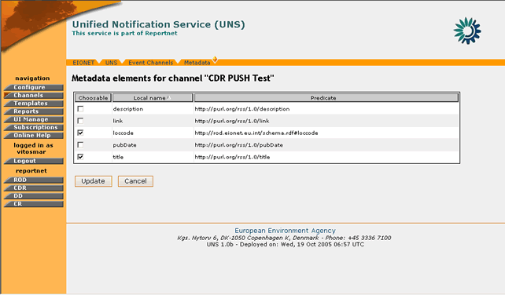
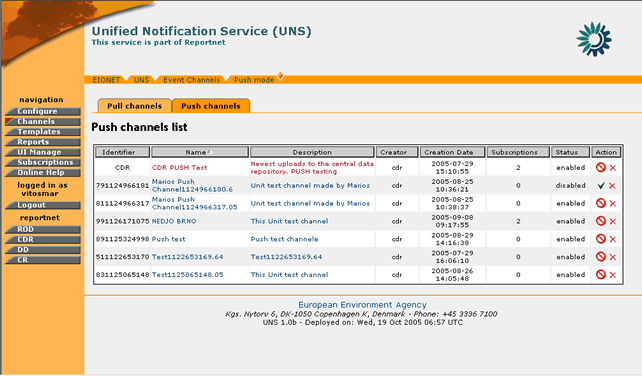

The channels in UNS can operate in two modes; the PUSH mode and the PULL mode.
A Channel created in the “PULL” mode will be used to harvest information from external data feeds.
In order to create a Channel you must be logged in as UNS Administrator.
If you have administrator privileges, then the following steps must be followed:
STEP 1 – Login
If you are not already logged in, see: Authenticate User Account.
STEP 2 – Click on “Channels” button on the navigation bar.
Arriving at the Channels section, the user may view the list of existing channels. The “Create” button is found on the bottom of this list.
Figure 4: PULL Channels list
STEP 3 – Click on “Create” button
STEP 4 – Insert the required information.
The user has to fill in:
- Channel name: The title of the channel as the end-users will see it
- Channel Description: A short text describing the channel’s context
- URL: Since the channel represents an RSS/RDF feed, this is the address of this feed in the Web.
- Refresh delay: The rate at which the channel’s contents should be refreshed.
- Select notification template
- Select allowed delivery types
- Select roles
In order for the channel to be successfully created, the required information must be filled-in correctly. If all fields are not properly filled-in or the content feed does not exist, then the application will return an appropriate error message.
Important Note: UNS does not allow the duplication of a channel. If the URL or the name of a new channel already exists, the application will return the appropriate error message.

Figure 5: Channel creation menu
STEP 5 – Select Metadata
After the verification of the information, the user may select the metadata of the channel that Reportnet users may use for filtering the events. An Administrator shall understand the semantics of metadata elements that would like to make available to the user. These elements may not be standard and depend on the event channel feed (see: Content Feeds section).
In the case that no metadata elements are selected, the user will not be able to filter events arriving for a channel. As a result, the user will receive all events arriving for this channel.

Figure 6: Channel metadata selection
STEP 6 – Create the channel
The channel creation is confirmed and the new channel is visible on the list.
So, in summary:
Step |
Create a new Channel |
1 |
Login |
2 |
Click on “Channels” icon |
3 |
Click on “Create” button |
4 |
Insert required information |
5 |
Select Metadata |
6 |
Create the channel |
In order to delete a Channel you must be logged in as UNS Administrator.
If you have administrator privileges, then the following steps must be followed:
STEP 1 – Login
If you are not already logged in, see: Authenticate User Account.
STEP 2 – Click on “Channels” button on the navigation bar.
Arriving at the Channels section, the user may view the list of existing channels (Figure 4: PULL Channels list).
STEP 3 – Click the (Delete Channel) icon.
This icon is located at the rightmost column of the channel list
STEP 4 – Confirm Channel Deletion

Figure 7: Delete Channel confirmation prompt
For safety reasons, the user receives a confirmation prompt for the delete channel action. If the user confirms, then the channel is deleted from the UNS database.
After a channel’s deletion, the channel’s subscribers will receive an automated notification message.
So, in summary:
Step |
Delete a Channel |
1 |
Login |
2 |
Click on “Channels” icon |
3 |
Click on “Delete Channel” button |
4 |
Confirm Channel deletion |
5 |
Delete a Channel |
In order to edit a Channel you must be logged in as a UNS Administrator.
If you have administrator privileges, then the following steps must be followed:
STEP 1 – Login
If you are not already logged in, see: Authenticate User Account.
STEP 2 – Click on “Channels” button on the navigation bar.
Arriving at the Channels section, the user may view the list of existing channels (Figure 4: PULL Channels list).
STEP 3 – Click on any Event Channel on the list
By clicking on the channel you will arrive at the “Edit Channel” page.
Figure 8: Edit Channel page
STEP 4 – Edit Channel fields
In the “Edit Channel” pages you may edit all the channel fields as well as the channel metadata options.
If during this step the channel’s allowed roles are modified, any previously subscribed users that will not have anymore access to this channel will receive an automated notification message for this change.
STEP 5 – Push “Update” button
By pressing the “Update” button the Channel’s information is updated.
So, in summary:
Step |
Edit a Channel |
1 |
Login |
2 |
Click on “Channels” button |
3 |
Click on any Event Channel on the list |
4 |
Edit Channel fields |
5 |
Push “Update” button |
Push channels are content services that are managed in UNS. Contrary to the PULL channels, the channels that operate under PUSH mode enable users to insert events in them.
PUSH Channels cannot be created through the UNS interface by Administrators. They are created by external applications via the XML-RPC API. (See RPC User Features). So an external system supplied by appropriate UNS credentials actually creates the push channels.

Figure 9: Push Channel Edit
Nevertheless, the UNS administrator is responsible for the management of these channels and can enable or disable them at any time.
More specifically, when the administrator visits the PUSH Channels tab under the “Channels” section, a list of the existing PUSH channels is displayed.
Upon the creation of the channel, the name and description are assigned automatically by the system. However, the administrator can edit them and give more meaningful titles. Additionally, the
Administrator can set the channel’s notification template, delivery type and allowed roles parameters. In order to do so, the user has to click on the name of the PUSH channel and arrive at the Channel Edit page.
Similarly to the PULL channels, the PUSH channels also have metadata elements. However, those metadata elements are not defined during the creation of the channel nor can the UNS administrator manage them directly. The PUSH channel metadata are defined at the moment that an initial PUSH of events occurs and subsequently, the UNS administrator may view them and manage them in the same way as in the case of PULL channels.

Figure 10: PUSH Channel Metadata
As mentioned earlier, the administrator can enable/disable any PUSH Channel. This is performed by clicking the corresponding action button on the channel list.
If the channel is under status “enabled”, the user with administration privileges should click the “disable channel” icon in order to disable it, or if the channel is under status “disabled”, the user should click the “enable channel” icon to enable the service.
When a channel is under status disabled, then it is not possible for external systems to push events data, neither users to subscribe themselves to that channel.
Furthermore, the user is able to delete an existing PUSH channel by clicking the “delete channel” icon on the action column.

Figure 11: PUSH Channels List